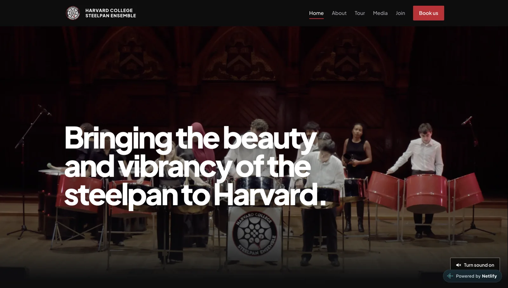

Harvard Steelpan
A website for the Harvard College Steelpan Ensemble.

Hear the ensemble
A performance video leads the homepage, with a sound toggle that lets visitors choose when to listen. The media page collects embedded YouTube performances and photographs, while the about page introduces the ensemble’s story, repertoire, and board.
The Trinidad tour page combines an itinerary, performance coverage, and a photo gallery to document the group’s connection to the instrument’s home.
Join or book
The site supports two main visitor goals: joining the ensemble and booking a performance. Prospective members can find rehearsal information, expand FAQs, and follow a link to the interest form.
Event organizers can submit a booking inquiry with their date, venue, event type, and budget. The form uses native field validation, a spam honeypot, and a dedicated confirmation page, with submission handling configured through Netlify Forms.
Built to stay simple
Seven static pages use HTML, CSS, and vanilla JavaScript, with no application framework or build step. Shared CSS variables, Grid, and Flexbox keep the visual system consistent across desktop and mobile. A small navigation script handles the mobile menu and Escape-key dismissal.
Gallery images and performance embeds load lazily. Keyboard focus styles, labeled inputs, skip links, and reduced-motion styles support different ways of navigating the site.
Keeping it maintainable
A Python check validates internal links, page metadata, image descriptions, navigation consistency, and booking-form markup. GitHub Actions runs it on pushes and pull requests. Page-specific titles and descriptions, a sitemap, and social-sharing metadata help visitors find and share the site.